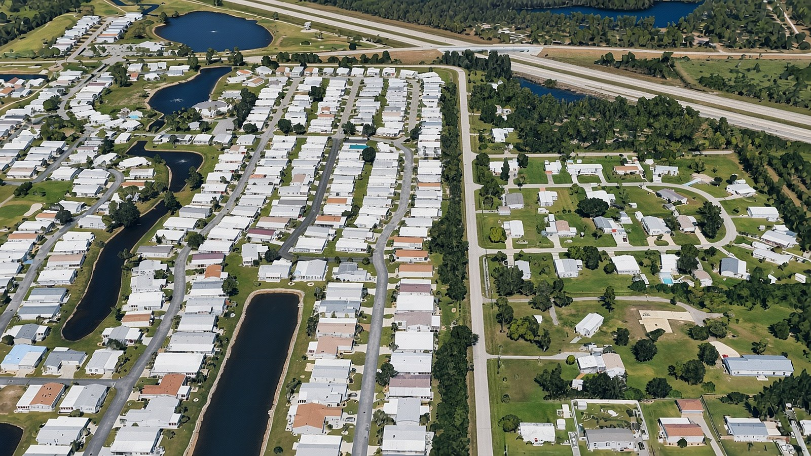
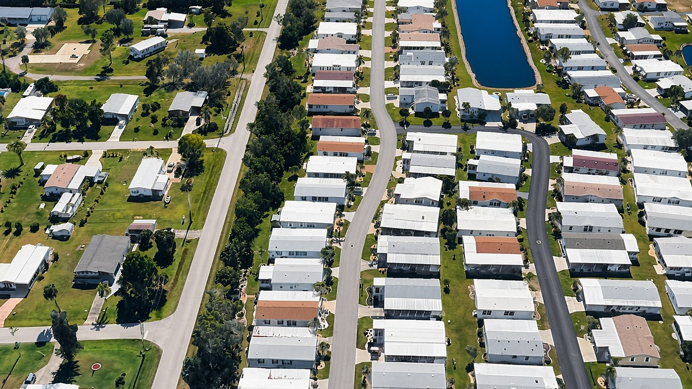

Draft preview for review. Not published. New Page for /explore/punta-gorda/blue-heron-pines/. Goes live 2026-12-08. Images shown from local copies. Rollout batch

Explore · Punta Gorda · Blue Heron Pines
Blue Heron Pines is a 55+ community of manufactured homes set around lakes, tall pines, and its own 18-hole executive golf course, a few minutes from downtown Punta Gorda.
It draws steady search interest, and it works differently from a typical neighborhood: you buy the home, not the land. Here is what the community publishes, how the land lease works, and what to check before you buy. For the wider city, see Explore Punta Gorda.
The short version
55+. An age-qualified retirement community, per the community.
Land lease. You own the home and rent the site.
Golf on site. 18-hole, par-60 executive course.
Close to town. About four miles from downtown Punta Gorda.
140
acres, per the community
18
golf holes
3,180
yards from the back tees
9,000
sq ft lakefront clubhouse
Source: Blue Heron Pines, community website; Blue Heron Pines Homeowners Association.
Amenities
Plenty to do without leaving the gate.
The community lists an 18-hole, par-60 executive golf course with an aqua driving range and pro shop, a heated pool and sundeck, a fitness center and sauna, a community center with a kitchen and art studio, a library, bocce, shuffleboard, horseshoes, a fenced dog park, a catch-and-release fishing lake, and RV storage. The homeowners association describes a renovated 9,000-square-foot lakefront clubhouse.
Source: Blue Heron Pines, amenities and activities; Blue Heron Pines Homeowners Association.

Blue Heron Pines streets of manufactured homes near the lakes.
How it works
You buy the home; the site is rented.
Charlotte County's roll shows Blue Heron Pines as a single park parcel of about 110 acres off Jeffrey Drive and Jones Loop Road, owned by the community's ownership group, with park buildings dating to 1983. Individual homes are not separate land parcels, so there are no county land values or sale records to quote for them. When you buy, you buy the home and sign a lease for the site. Florida law gives manufactured home owners in parks like this specific notice rights on rent increases and rule changes.
Source: Charlotte County Property Appraiser, parcel file and subdivision list (downloaded Nov 20, 2026); Florida Statutes, Chapter 723, Mobile Home Park Lot Tenancies.
Before you buy
The lease matters as much as the home.
Read these before you commit.
Get the current rent, what it covers, and past increases.
Ask for the park prospectus and community rules.
Check the roof, tie-downs, and wind zone rating.
Quote coverage for the home before closing.
Our insurance guide covers what drives premiums on manufactured homes.
Source: FEMA Flood Map Service Center.
FAQs
Where is Blue Heron Pines?
Blue Heron Pines is at 29200 Jones Loop Road, Punta Gorda, ZIP 33950. The community says it is about four miles from downtown Punta Gorda and within three miles of I-75 and U.S. 41.
Is Blue Heron Pines a 55+ community?
Yes. The community markets itself as a 55+ retirement community. Confirm the age and occupancy rules before you buy.
Do you own the land at Blue Heron Pines?
No. It is a land-lease community. The county roll shows the park as one large parcel owned by the community's ownership group, and homeowners own their homes and pay monthly site rent.
Does Blue Heron Pines have a golf course?
Yes. The community lists an 18-hole, par-60 executive course reaching 3,180 yards from the back tees, with an aqua driving range, practice areas, and a pro shop.
What do homes at Blue Heron Pines cost?
On November 20, 2026, homes advertised on the community's website ranged from about $165,000 to $183,000, with site rent on top. Prices and rent change, so ask for the current rent schedule and increase history.
Weighing the move?
Start with our straight answer to Is Punta Gorda a good place to live? It covers the climate, storms and insurance, schools, healthcare, airports, beaches, and every neighborhood guide in one place.
Considering Blue Heron Pines?
We can help you compare land-lease and owned-land options in Punta Gorda. Call or text The Helgemo Team at (941) 770-2275.
The office is at 320 Cross Street, Punta Gorda, Florida 33950. You can also meet Brian Helgemo or read more about the team.
Sources: Blue Heron Pines, community website; Blue Heron Pines, amenities and activities; Blue Heron Pines Homeowners Association; Charlotte County Property Appraiser, parcel file and subdivision list (downloaded Nov 20, 2026); FEMA Flood Map Service Center. Checked November 20, 2026.